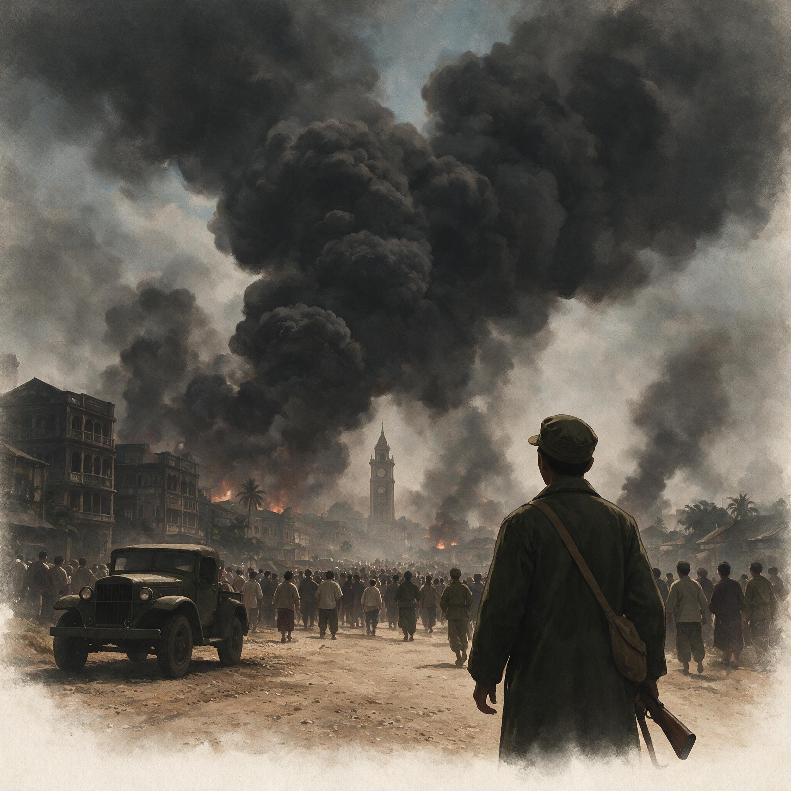

第 9 章
同古：第一滴血
二〇〇师的先头部队抵达同古时，火车站上空那座白色水塔还完好无损地立在三月干燥的空气里。尖兵已经控制了站台。铁轨两侧堆着英军撤退时遗弃的板条箱——军需罐头和信号弹，封条完好，锁头都没

1942年仰光陷落时的浓烟
AI 生成插图，非史实影像。
来得及砸开。缅甸三月的太阳升起来后，这些铁皮罐头在板条箱里晒得发烫。
戴安澜从吉普车上下来时，参谋已经在站台上摊开了同古的城区地图。这座小城坐落在仰光至曼德勒的铁路线上，南北长不到三公里，东西更窄。城东是锡唐河的一条支流，旱季水浅但岸陡；城西是开阔的稻田和椰林，干裂的田地硬得像棋盘。
铁路从城南穿入，经过车站后向北延伸，把城区劈成两半。城中心有几条土路交叉，两侧是缅甸人的木屋和华人商铺。城墙早已坍塌，只剩下几段土垒和一道浅壕。
这不是一座为现代战争准备的城市。但它是通往曼德勒的门户。日军从仰光北上，沿铁路线推进，同古是必经之路。如果同古失守，下一个防御节点在三百公里外的平满纳。三百公里，中间没有可依托的地形。
戴安澜接到的命令很清楚：固守同古，掩护后续部队集结。第五军的第九十六师和新编第二十二师还在滇缅公路上向缅甸境内开进，第六军的部队分散在东部泰缅边境的丛林里。
此刻挡在日军第十五军面前的，只有这个刚刚抵达的师——一万一千人，三个步兵团，一个炮兵团装备着法国造七五山炮和少量苏罗通小炮。没有坦克。没有防空掩护。
三月八日仰光陷落的消息传到同古时，二〇〇师的先头部队刚刚开始构筑工事。电台里传来的不是英军的战况通报，而是沉默。仰光的英军指挥官在撤退前销毁了密码本和通讯设备。中国远征军司令长官部直到两天后才确认仰光已经易手——而在这两天里，日军第五十五师团的先遣队已经开始沿铁路线向北推进。
同古城内的防御部署是在和时间赛跑。第六〇〇团守城南正面，第五九九团部署在城西铁路沿线，第五九八团作为预备队控制在城北。
根据远征军序列，二〇〇师下辖598、599、600三个团，师长戴安澜；其所属的第五军由杜聿明代理司令长官指挥，下辖新编第二十二师（师长廖耀湘）和第九十六师（师长余韶），但此刻这些部队都还在路上。
炮兵营的十二门七五山炮被分散配置在城北高地的反斜面阵地上——这是戴安澜在昆仑关战役中学到的经验：集中使用炮兵火力更强，但在没有制空权的情况下，分散配置至少能保证一部分火炮存活到关键时刻。
士兵们开始挖散兵坑和交通壕。城西椰林里的土壤是沙质土，铁锹下去容易但壕壁容易坍塌；城南靠近河岸的地方是黏土，挖到半米深就渗出泥浆。工兵营的士兵教步兵用椰树干和门板加固壕壁，用佛塔拆下来的砖石垒射击掩体。
城内的缅甸居民开始逃离——牛车和三轮车堵在向北的土路上，车上堆着被褥、锅碗和佛龛。中国士兵在人群中逆向行进，扛着弹药箱和担架向南走。
三月十九日中午，日军侦察机第一次出现在同古上空。那架飞机飞得很低，几乎擦过水塔顶端，机翼下的旭日徽清晰可见。城内防空哨吹响了哨子，但士兵们没有高射机枪——二〇〇师唯一的防空武器是三挺装在卡车上的苏罗通小炮，射程和射速都不足以威胁快速飞行的侦察机。那架飞机在同古上空盘旋了两圈，然后向南飞去。
所有人都知道这意味着什么：炮击和进攻将在几小时内到来。日军的炮弹在日落前落下。第一轮炮击的目标是火车站和水塔——日军地图显然将这些建筑标记为交通枢纽和观测点。炮弹从南边飞来，弹道平直，是七五毫米野炮的射击特征。水塔在第一轮齐射中被击中，塔身炸开一个豁口，水柱喷出十几米高，在夕阳下闪着诡异的橙红色。车站站台被掀翻，英军遗弃的板条箱被殉爆，罐头和信号弹炸得满天飞。中国士兵趴在散兵坑里，感受着地面传来的震动。
这些来自云南、四川和湖南的年轻人，大多数是第一次经历炮击。他们按照训练要求张开嘴、捂住耳朵，但身体仍然不受控制地蜷缩起来。
炮击持续了二十分钟后突然停止。城西椰林方向传来零星的枪声——那是第五九九团的前沿观察哨在和日军尖兵交火。
真正的进攻在次日拂晓开始。日军第五十五师团的第一四三联队担任主攻，沿铁路线向北推进。
战术是标准的日军步兵教范：炮兵准备后，步兵以中队为单位展开散兵线，轻机枪组在前沿提供压制火力，掷弹筒填补步枪和迫击炮之间的射程空白。先头中队的士兵端着上了刺刀的三八式步枪，以疏散队形越过开阔地。在他们身后，坦克中队的八九式中型坦克沿铁路路基缓慢推进，炮塔指向城区方向。
中国守军的第一次反击来自城西椰林。第五九九团的一个连利用椰树和土垒做掩护，在日军步兵进入三百米距离时突然开火。捷克式轻机枪的射击声清脆而急促，中正式步枪的齐射在椰林间回荡。日军第一波冲击被打散——冲在最前面的几个士兵栽倒在稻田的干土块上，后面的迅速卧倒寻找掩体。
但坦克的出现改变了交火节奏。那辆八九式坦克碾过铁路路基的碎石，炮塔转向椰林方向，一发三七毫米炮弹击中了一棵椰树。树干被拦腰炸断，飞溅的碎片和尘土遮蔽了机枪组的视线。中国士兵没有反坦克炮——师属炮兵营的火炮部署在城北，射界被城区建筑遮挡，无法支援城西战斗。
一个班长从散兵坑里爬出来，手里抱着用绑腿捆扎在一起的五枚木柄手榴弹。
他沿着交通壕匍匐前进，向那辆坦克的侧翼接近。坦克里的日军车长注意到了这个移动目标，炮塔开始旋转，车载机枪向交通壕方向扫射。子弹打在土垒上溅起一串土柱，那个班长把头埋进壕底，等机枪扫射过去后继续爬行。
他在距离坦克大约二十米的地方拉燃了导火索——集束手榴弹的木柄冒着青烟——然后从壕沟里跃起，向坦克履带冲去。坦克机枪再次响起，子弹击中了他的腿部和腹部，但这个冲力让他摔倒在距离坦克不到五米的地方。手榴弹在几秒钟后爆炸，冲击波掀翻了坦克的一块履带板。坦克歪斜着停下来，车组成员从底部逃生口爬出时被步枪火力击倒。
这一幕被第五九九团的作战日志记录下来，后来出现在戴安澜呈送第五军军部的战报中。日军《战史丛书·缅甸作战》在记述同古战斗时提到了中国军队的反坦克战术。
该书对这场战斗的评价直白而罕见：“敌军士兵携带集束手榴弹接近战车，虽在火力下伤亡惨重仍继续突进，其战斗意志之顽强为南方作战以来首次遭遇。”这段文字是日军官方战史中少有的对敌方士兵的正面评价——在马来半岛和新加坡，他们遇到的英军和澳军通常在坦克冲击下溃散；在缅甸南部，英印军第十七师的防线在日军坦克出现后迅速崩溃。
但在同古，他们遇到了不同的对手。然而战斗意志的展现与战场的整体态势是两回事。
那辆被炸毁的坦克阻塞了铁路线大约两个小时，日军工兵用另一辆坦克将它拖到路边后，进攻继续推进。到二十日下午，日军已经突破了城西椰林的第一道防线，第五九九团被迫退守到城区边缘的第二道阵地。伤亡数字开始攀升——团属卫生队的担架不够用，士兵们用门板和雨布自制担架往后方运送伤员。
补给问题在战斗开始的第三天暴露出来。二〇〇师在向同古开进时携带的基干口粮是三日份——按每人每天一斤半大米、二两腌菜的标准配给。三月二十一日，先头部队的口粮开始告罄。
师部军需处的记录显示，从国内转运的补给车队仍在滇缅公路上缓慢移动，最近的补给站远在腊戍以北。同古城内没有可征用的粮食储备——缅甸商人在战斗开始前就逃离了城区，粮仓和杂货铺空空如也。
士兵们开始缩减口粮。三日份变成两日份，两日份变成一日份。炊事班在城北的隐蔽处架起行军锅，煮出来的稀粥越来越稀。
弹药消耗同样严峻：第五九九团在二十日的战斗中消耗了超过一半的机枪弹药储备；师属炮兵营的山炮炮弹每门只有不到六十发基数，在没有空中掩护的情况下不敢集中射击暴露阵地。
史迪威在三月二十一日的日记中记录了这一困境。他写道：同古守军已经激战三天。中国士兵的表现超出预期——他们坚韧、服从、不惧伤亡。但他们的补给状况令人绝望。没有空中支援，没有足够的反坦克武器，口粮即将耗尽。他向重庆发报要求紧急空投物资，但运输机队无法突破日军的空中封锁。
这段记录捕捉到了一个关键矛盾：前线士兵的战斗素质与支撑他们持续作战的后勤体系之间存在巨大的断裂。
这种断裂不是士兵个人的问题，而是整个军事体系的问题——从滇缅公路的运力瓶颈到盟军空中力量的部署优先级，这些都不是一个师长或一个团长能解决的。
三月二十二日，日军的进攻方向发生了变化。第五十五师团指挥官竹内宽意识到正面强攻代价太大，开始将攻击重心转向同古城东侧的锡唐河岸。那里的地形更复杂——河岸陡峭，竹林密布——但也更容易渗透。
日军工兵在夜间架设了浮桥，一个大队的步兵在黎明前渡河成功，向城东北方向的第六〇〇团侧翼发起突袭。
这场突袭几乎得手。第六〇〇团的前沿哨兵在黑暗中听到了河对岸的动静，但无法判断是友军还是敌军——英军撤退时留下了大量的指挥混乱，没有人确切知道侧翼是否有盟军部队驻守。直到日军的手榴弹投进散兵坑时，守军才确认敌人已经摸到了鼻子底下。
接下来的白刃战持续了将近一个小时。中国士兵从散兵坑里跃出，端着上了刺刀的中正式步枪迎向冲上来的日军步兵。中正式步枪比三八式短一些，在白刃战中处于劣势——三八式的枪身更长，刺刀也更长。
但中国士兵在肉搏中使用了另一种武器：木柄手榴弹。他们不拉导火索，直接用手榴弹的铁头砸向敌人的面部和头部——这种打法在昆仑关战役中被证明有效，此刻在同古城东北角的竹林里再次派上了用场。
一个排长后来在战地医院向师部参谋口述了战斗经过。这份口述记录残片保存在第五军的档案中：弟兄们和鬼子搅在一起，枪打不了就用手榴弹砸，用刺刀捅，用牙齿咬。三班有个兵被鬼子压在身下，拉燃了手榴弹和他们一起炸了。
日军的记录从另一面印证了这场白刃战的惨烈。《战史丛书·缅甸作战》记载：“敌军抵抗极为顽强，多次以白刃逆袭夺回失地，我军攻击进展缓慢，死伤增加。”这段文字的语气是战史记录式的平静，但“死伤增加”四个字背后是第五十五师团在同古城下逐日攀升的伤亡报表。
到二十二日黄昏，第六〇〇团终于将渗透的日军赶回了河对岸。但他们付出了沉重的代价——该团三营伤亡过半，营长阵亡，继任指挥的副营长也在最后一次反冲击中负伤。
同古战役打到第四天时，指挥系统的裂缝开始在更高层面显现出来。杜聿明在曼德勒的第五军军部接到了戴安澜的战况报告。报告的内容是克制的：防线仍在手中，但弹药和口粮即将耗尽，请求指示是否继续坚守。杜聿明的判断是现实的——二〇〇师已经在同古拖住了日军四天，为后续部队的集结争取了时间；但如果继续坚守到弹尽粮绝再后撤，这个师可能全军覆没。三月二十三日，杜聿明向远征军司令长官部发报，建议适时命令二〇〇师向北突围。
但史迪威的意见不同。这位美国将军此刻正在眉苗的远征军司令部试图协调一场更大规模的会战——他计划以同古为支点，集结第五军全部和英军一部在平满纳地区与日军进行决战。如果二〇〇师现在就后撤，这个计划将失去时间窗口。
史迪威在二十三日的日记中写道：杜聿明想撤出同古。他反对。这个师打得很好，应该继续坚守直到平满纳会战准备完成。但杜聿明担心这个师被合围——他的担心有道理，因为英军在卑谬方向没有任何动作来保障侧翼安全。
指挥权分裂的本质在这一刻暴露无遗。史迪威作为中国战区参谋长和缅甸战场的美军指挥官，理论上拥有对中国远征军的指挥权；但杜聿明作为第五军军长，直接听命于重庆的蒋介石——而蒋介石对史迪威的信任从一开始就是有限的。远征军司令长官卫立煌尚未到任，代理指挥的杜聿明既要执行史迪威的战役构想，又要对重庆负责保存第五军的实力。这两套指挥逻辑在同一场战役中并行运转：一套逻辑追求战役胜利的最大化，另一套逻辑追求实力保存的最优化。它们在平时可以妥协共存，但在同古这种高压环境下必然发生碰撞。
但杜聿明担心这个师被合围——他的担心有道理，因为英军在卑谬方向没有任何动作来保障侧翼安全。
指挥权分裂的本质在这一刻暴露无遗。史迪威作为中国战区参谋长和缅甸战场的美军指挥官，理论上拥有对中国远征军的指挥权；但杜聿明作为第五军军长，直接听命于重庆的蒋介石——而蒋介石对史迪威的信任从一开始就是有限的。远征军司令长官卫立煌尚未到任，代理指挥的杜聿明既要执行史迪威的战役构想，又要对重庆负责保存第五军的实力。这两套指挥逻辑在同一场战役中并行运转：一套逻辑追求战役胜利的最大化，另一套逻辑追求实力保存的最优化。它们在平时可以妥协共存，但在同古这种高压环境下必然发生碰撞。
三月二十四日，战场的物理现实进一步压缩了指挥选择的空间。日军第五十五师团得到了第十五军从仰光调来的增援——一个野炮联队和一个工兵联队加入了进攻序列。日军的炮火强度骤然提升：二十四日上午的炮击持续了将近一个小时，落弹密度明显高于前几天。
戴安澜在二十四日傍晚收到了侧翼暴露的消息。他派出的侦察兵在城西北方向发现了日军的活动迹象——那是一个中队正在沿一条土路向北迂回。这意味着合围已经开始成形。戴安澜向军部发出了第二封电报：侧翼暴露，弹药将尽，请求批准突围。杜聿明这一次没有再等待史迪威的同意。他以第五军军长的身份直接命令二〇〇师于二十五日夜向北突围。这个命令在指挥体系上存在争议——史迪威认为杜聿明无权单方面下令后撤——但在战场现实面前，争议已经失去了意义。二〇〇师如果不在合围完成之前撤出同古，一万一千人将陷入绝境。
三月二十五日夜间，突围行动开始。第六〇〇团留在城南继续与日军接触，制造仍在坚守的假象；第五九九团和第五九八团沿城北的土路分批撤出；师部机关和炮兵营先行转移；
伤员由担架队护送向北运送。撤退序列的安排体现了一种冷酷的优先级：能走的伤员优先转移，重伤员由后卫部队负责——但在后卫部队也必须快速撤离的情况下，“负责”的含义变得模糊。二十六日凌晨，日军察觉了中国军队的动向并向北追击。后卫部队第六〇〇团的一个营在城北五公里处与日军追兵交火——这场阻击战持续了两个小时，为主力争取了脱离时间。该营在完成阻击任务后自行突围，但最终归建的人数不到出发时的一半。
同古战役结束了。战后统计的数字呈现出一种冷峻的不对称。根据远征军司令长官部汇整的战报——这份战报现存于中国第二历史档案馆——二〇〇师在同古战役中阵亡官兵约两千人，负伤约三千人；
日方《战史丛书·缅甸作战》记载第五十五师团在同古战场的死伤数字为“约五百人”。双方伤亡比大约为十比一。但这个数字需要放在具体的战场条件下来理解。日军拥有制空权——在整个战役期间，日军的侦察机和轰炸机在同古上空自由行动；中国军队没有空中掩护。日军拥有坦克和优势炮兵——第五十五师团配属了一个野炮联队和一个战车中队；中国军队只有十二门七五山炮和集束手榴弹。
日军的补给线从仰光港延伸过来只有不到两百公里；中国军队的补给线从腊戍绕行群山长达数百公里。在这些条件叠加下，二〇〇师能在同古坚守七天本身就是一个军事成就——它打破了日军自马来亚战役以来快速击溃盟军防线的节奏。日军原本预计三天内占领同古并继续北上；
结果他们在同古城下被拖住了一周。这一周时间让第五军后续部队得以在平满纳地区展开；也让史迪威有时间构思他的会战计划——尽管这个计划最终未能实现。但同古的意义远不止于迟滞了日军的推进速度。这场战役第一次向盟军方面证明了中国士兵的战斗素质。
史迪威在三月二十七日的日记中写下了那句后来被反复引用的话：“中国士兵是优秀的材料。他们坚韧、勇敢、服从命令、能承受巨大的困苦。问题出在指挥系统和后勤供应上。”
英国第十四集团军司令斯利姆在战后撰写的回忆录《反败为胜》中也提到了同古战役：“中国军队在同古的表现令人印象深刻——他们在装备劣势、补给匮乏的情况下击退了日军的多次进攻。这证明只要有适当的装备和训练，中国士兵可以成为一流的战士。”
这个判断后来成为跨国共识：中国士兵是世界优秀步兵，缺的是现代化体系和公平后勤。但跨国的赞誉无法填补战场上已经流干的鲜血。二〇〇师撤出同古时携带的物资清单记录下了补给的枯竭程度：口粮储备为零——最后一批稀粥在二十五日中午分给了后卫部队；步机枪子弹平均每人不足三十发；山炮炮弹全部耗尽；
医疗用品只剩下几卷纱布和少量碘酒。一万一千人的师撤到平满纳时清点人数：战斗人员还有不到七千人可以立即投入作战。那些阵亡者留在了同古——留在城南被炮火犁过的散兵坑里，留在城西椰林的反坦克冲击路线上，留在城东北河岸的白刃战现场。他们的遗体大部分未能收殓。
后卫部队撤退时来不及掩埋死者；日军占领同古后按照自己的程序处理了战场——这意味着中国阵亡者的遗骸最终被集体掩埋在不知名的地点。他们的名字留在花名册上——第五军的档案中保存着二〇〇师阵亡官兵的名录残卷。但这些名字中的大多数此后再也没有出现在任何抚恤记录、纪念碑或官方文件中。
日军的官方战史在记录同古战役时，使用了一种不同于其他南方作战章节的笔调。《战史丛书·缅甸作战》在描述马来半岛和新加坡战役时，对英军和澳军的评价通常是“抵抗微弱”“迅速溃退”或“在战车冲击下丧失战意”。
但在同古章节中，措辞发生了明显变化。该书第五十五师团作战记录部分写道：“敌军据守阵地极为顽强，虽遭炮击和战车冲击仍不退却。其反坦克攻击班携带集束手榴弹匍匐接近战车，在机枪火力下伤亡相继而后续者仍继续突进。
此种战斗意志为南方作战以来首次遭遇。”这段话中的“首次遭遇”四个字承载着特定的军事含义——日军第十五军自登陆马来半岛以来，在三个月内横扫英军防线逾千公里，从未在任何地点遭遇过持续超过两天的有组织抵抗。同古是第一个让他们需要重新计算推进时间表的城市。
更具体的战术评价出现在该师团情报参谋的附录报告中。这份报告分析了中国军队在同古采用的防御战术特征：纵深配置的散兵坑体系取代了英军惯用的线性堑壕；反坦克小组不依赖固定火力点，而是利用地形隐蔽实施机动攻击；白刃逆袭的时机选择在日军攻击队形展开但尚未巩固立足点的短暂窗口。
报告特别指出，中国士兵“善于利用夜暗和椰林掩护实施近距离突袭，其掷弹筒和手榴弹的使用熟练度超出预期”。这些评价不是出于对敌人的尊重——日军战史的语言习惯向来克制甚至冷漠——而是因为同古的经验直接影响了第五十五师团后续的战术调整。竹内宽在三月二十三日下令暂停正面强攻、转向河岸渗透的决定，正是对中国守军正面防御能力的被动回应。
日军原本用于北上的时间表被撕开了一个缺口：预计三天的战斗变成了七天，预计轻微伤亡的扫荡作战变成了需要增调野炮联队和工兵联队的攻坚战。这个缺口虽然最终被日军的兵力优势和制空权弥补，但它暴露了一个事实——当中国士兵获得基本的阵地准备时间和弹药储备时，他们能够对日军精锐师团构成实质性的阻滞。
然而，“基本”这个词在同古恰恰是奢侈品。师部军需处的补给清单以每两日为间隔记录着物资存量的变化。三月十九日战斗开始前，清单显示：大米储备约四万五千斤，按全师一万一千人每日一斤半的标准计算，可维持约二点七日；步机枪子弹基数约一百二十万发，每枪平均约一百发；七五山炮炮弹存量为每门五十八发。
三月二十一日傍晚的更新数字是：大米剩余不足两万斤，口粮标准被迫减半；步机枪子弹消耗超过四十万发，补充为零；山炮炮弹因不敢集中使用而消耗较少，但观测设备在轰炸中受损导致射击精度下降。
三月二十三日的清单开始出现触目惊心的空白项：大米储备栏写着“约八千斤”——这意味着全师的口粮已不足一日份；医疗用品栏的碘酒和吗啡标注为“将尽”；担架栏的备注是“自制担架替代”。三月二十五日突围前的最后一份清单只列了三项内容：口粮“无储备”；
山炮炮弹“全部耗尽”；步机枪子弹“平均每人不足三十发”。这份清单没有列出的项目是阵亡者——两千人的遗体无法携带、无法掩埋、无法记录完整的姓名和籍贯。
国民政府军政部的抚恤体系在战争期间运转不良；战后内战的爆发使档案进一步散失；1949年后政治格局的变化让远征军的历史长期处于沉默状态。
同古战役勾勒出的那道裂缝——士兵战斗意志与支撑体系的断裂——将从这座小城延伸向北方。二〇〇师撤出的那条土路通向平满纳、曼德勒、腊戍和密支那；通向更惨烈的仁安羌解围战和更绝望的野人山大撤退。指挥权分裂的问题没有解决；后勤断档的问题没有解决；空中掩护缺失的问题没有解决。这些结构性的困境将伴随远征军在缅甸的每一步移动。
同古没有给出答案。同古只是把问题用鲜血写在了缅甸三月的干裂土地上：一支军队如果只能用血肉去弥补体系的缺陷，那么血肉终将耗尽而缺陷依然存在。数字冷冰冰地刻下了这道裂缝的宽度：七天激战，两千阵亡三千负伤对五百死伤；十二门山炮对野炮联队加战车中队；零架飞机对绝对制空权；零储备口粮对两百公里补给线；一纸突围命令对两套指挥逻辑的撕裂。
这些数字不是用来歌颂牺牲的——它们只是精确地计量了同一件事：在同古战场上，中国士兵的战斗价值被实时兑现为迟滞日军的时间成本，而支撑这种价值兑现的体系却在每一个环节上打折、漏损、断裂。这种兑现是不可持续的。当血肉的支付能力耗尽时，体系欠下的债就会被追索——追索的方式将是更惨重的伤亡、更仓皇的后撤和更彻底的崩溃。同古之后是仁安羌。
那座油田城市将见证另一种形式的胜利与代价——一场成功的解围战如何在外交声誉和战略被动的夹缝中被完成、被记述、被遗忘。而同古留下的那道裂缝将原封不动地铺展在通往仁安羌的道路上：指挥权仍然分裂着，补给线仍然断裂着，天空仍然不属于中国士兵。他们只能继续向北走。背上的干粮袋已经空了。